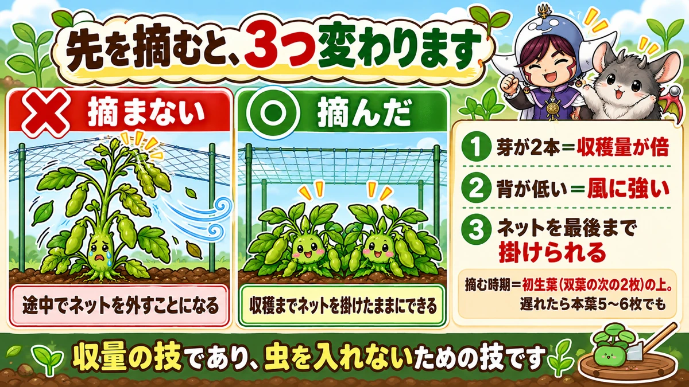
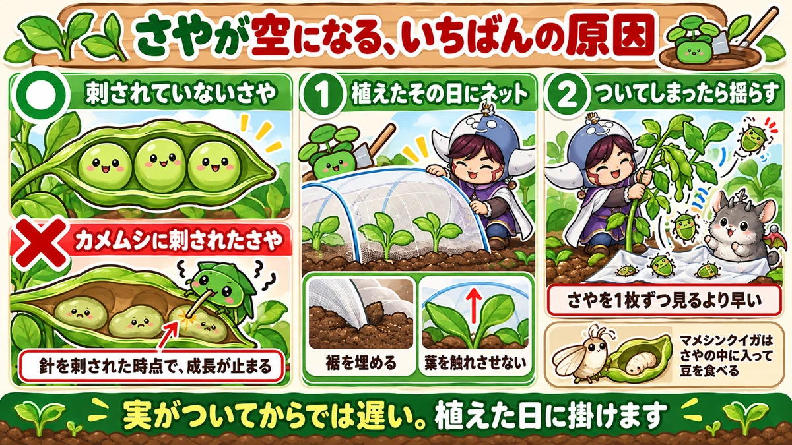
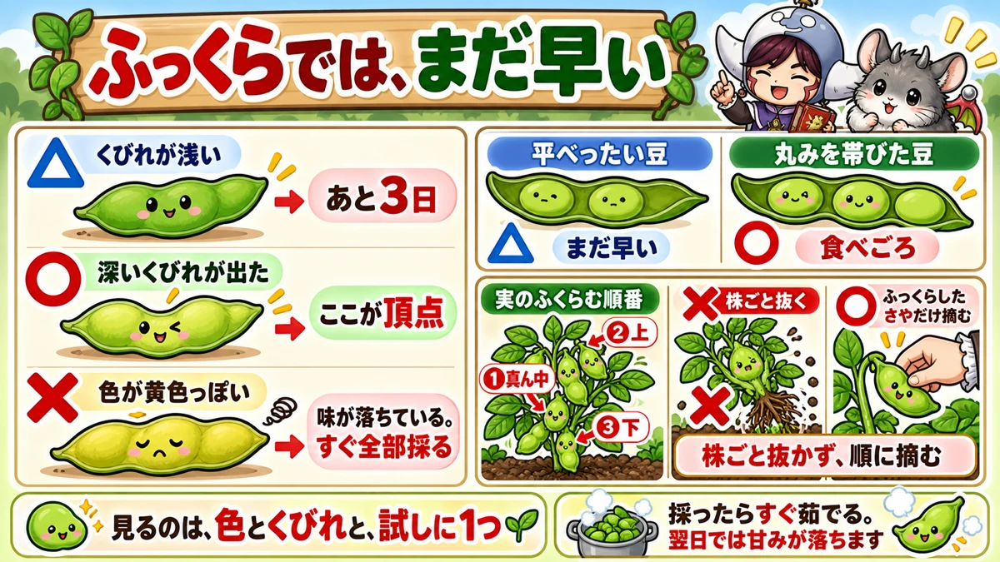

Pinch edamame early and you double the crop But the real gain is the netting

"The pods formed and there was nothing inside."
"I never know when to pick them."
"Masses of leaves and no pods at all."
Hello, I'm Eiko. Eight years of growing vegetables organically and without pesticides, and a teaching licence in science.
The headline:
Pinch the tip out while the plant is small and you double the harvest.
But that isn't the real benefit. Pinching keeps the plant short — which means you can leave the insect netting on right through to harvest. That's the one that matters.
It needs almost no fertiliser
The odd thing about edamame: you don't need base fertiliser at all.
I put a little rapeseed meal round the plants only once they're about 10 cm (4 in) tall. On ground with residue from a previous crop, no fertiliser at all works. Why, in the science section.
Overfeed it and you get no pods
This is the answer to "all leaves, no pods". Too much nitrogen and it runs to growth.
Splendid leaves and stems, no pods — fertiliser added with the best intentions, backfiring.
With edamame, slightly short is about right.
Pinching changes three things

What this diagram says （図解の文字）
- Pinch the tip and three things change
- ✗ "not pinched" — "you end up taking the netting off partway"
- ○ "pinched" — "the netting can stay on to harvest"
- 1 "two shoots = double the crop" 2 "short = strong in wind"
Do it very early
Earlier than you'd expect. From seed, the seed leaves are followed by two simple leaves; pinch the bud just above those.
Scissors or fingers, either.
"Already?" — yes. I was nervous the first time; it was fine. If you miss that moment, about five or six true leaves still works.
① Two shoots — double the crop
Pinch it and two new shoots come from the joint below. One main stem becomes two, so the number of pod-bearing positions simply doubles.
② Shorter, so stronger in wind
In exchange for the two shoots, the plant stays lower. Edamame gets taller than people expect and blows over when the pods get heavy. Lower is straightforwardly stronger.
③ The netting stays on to the end
And here's the real prize. A short plant means the insect netting tunnel can stay on until harvest.
A tall plant pushes its leaves into the netting and you're forced to take it off — and the moment you do, the insects arrive.
So pinching is both a yield technique and a pest technique. Realising that is what made my edamame consistent.
Why pods come out empty

What this diagram says （図解の文字）
- The main cause of empty pods
- ○ "a pod that wasn't punctured" ／ ✗ "a pod a shield bug has fed on"
- "The moment the stylet goes in, growth stops"
- 1 "net it the day you plant" — "bury the hem"
Pods formed, nothing inside. The main culprit is shield bugs.
Once the stylet goes into a pod, that pod stops developing — it stays flat and empty.
There's also a pod borer, whose larvae get inside and eat the beans.
So net it immediately
One answer: put the netting on the day you plant.
"Once the pods start" is too late — the insects are waiting for the pods.
Two points:
- Weight the hem with soil — they come in through gaps
- Don't let the leaves touch the netting — eggs get laid through it
And if you pinched the plant and it's short, this netting can stay on to the end. That's the loop closing.
If they're already in: shake it
Checking every pod is miserable work — I gave up partway myself.
Instead, shake the plant in small, quick movements. Not hard. Most of the larvae drop off. Clear up what falls, then put the netting back.
Two more causes of empty pods
Not enough water
While the pods are filling, edamame wants a surprising amount of water. Let it dry then and the beans don't fill. From flowering onward, concentrate on not letting it dry.
Without mulch film, straw or cut grass around the plants makes a considerable difference.
Not enough sun (wait it out)
A long wet spell means less light and slower filling. There's no prevention for this, and the important part is:
Don't respond to slow growth with more feed or more water. You get rampant growth and disease instead. Once the weather clears it usually catches up. Waiting is part of the work.
Harvest: three days changes it

What this diagram says （図解の文字）
- Plump is still too early
- △ "shallow waist" — "three more days"
- ○ "a deep waist has appeared" — "this is the peak"
- ✗ "colour going yellowish" — "flavour is dropping. Pick everything now"
- △ "flat beans" — "still early"
The hard part: there's no "so many days from flowering", and no falling tops like an onion. You judge it yourself, on three things.
① Colour
A bright yellow-green pod is the eating stage. Going yellowish means the flavour is already dropping — at that point, pick the lot without hesitating.
② The waist — the reliable one
Plump is not enough. The peak is when a deep waist appears between the beans.
Look from the side. Shallow waist, wait about three more days — and those three days change the sweetness noticeably.
③ Open one
- Beans still flat — too early
- Beans rounded — ready
Comparing with a shop-bought bunch is a good way to calibrate your own eye.
Don't pull the whole plant
One more: pods fill from the middle of the plant first, then above and below.
So pulling the whole plant means harvesting everything when only the middle is ready.
Pick the filled pods in turn. You harvest over a longer period, and everything you pick is at its best.
Boil them immediately
Edamame starts losing sweetness the moment it's picked. Boiled the next day, the difference is obvious.
Pick in the afternoon and take it straight to the kitchen — that's the real luxury of growing them. If you can't cook them at once, chill them first, before anything else.
Science bit: there's a fertiliser factory on the roots 🔬
Why does edamame need no fertiliser? Dig up a root and you have the answer.
Legume roots are covered in small white nodules. Not a disease — they're rooms occupied by nodule bacteria.
And these bacteria take nitrogen from the air and convert it into a form the plant can use.
About 80 % of air is nitrogen, unusable as it is. Nitrogen fertiliser is that unusable nitrogen converted — and the nodule bacteria do the same job, in the soil.
So added nitrogen is surplus
Now the rampant growth makes sense. Add nitrogen to a plant already making its own and there's a surplus — and surplus nitrogen goes into leaves and stems. All leaf, no pods.
To sum up
- ✅ 30 cm apart, 2–3 seeds per station
- ✅ No base fertiliser. First feed at about 10 cm tall
- ✅ Too much nitrogen = leaves, not pods
- ✅ Pinch just above the first simple leaves — fingers are fine
- ✅ Two shoots = double the crop, and shorter = wind-resistant
- ✅ ★And the netting can stay on to harvest
- ✅ Empty pods are mostly shield bugs. One puncture stops the pod
- ✅ Net the day you plant. Bury the hem, keep leaves off it
- ✅ Already infested? Shake the plant
- ✅ Don't let it dry once flowering starts. In dull weather, wait rather than feed
- ✅ Judge by colour, waist and one opened pod
- ✅ Pods fill from the middle. Pick in turn, don't pull the plant
- ✅ Boil them straight away
You don't have to do all of it. Next time you grow them, pinch the tip once, just above the first simple leaves. The shape of the whole plant changes
Thank you for reading!